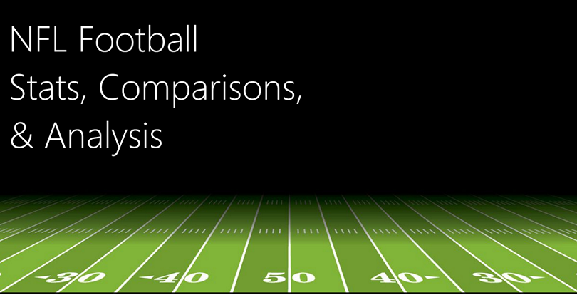

+25,000 matches,
+10,000 players,
11 European Countries with their lead championship,
Seasons 2008 to 2016.
Players and Teams' attributes* sourced from EA Sports FIFA video game series, including the weekly updates
Note: Due to varying protocols and challenges in the attribution of the cause of death, the number of confirmed
deaths may not accurately represent the true number of deaths caused by COVID-19.
Pulling Sales data from the Database using SQL query. So as to make the dataset ready for analysis.
Explore
Pulling pizza data from the Database using SQL query, to compare with the information on the powerbi dashboard. So as to identify the discrepancies.
Pulling Sales data from the Database using SQL query. So as to make the dataset ready for analysis.